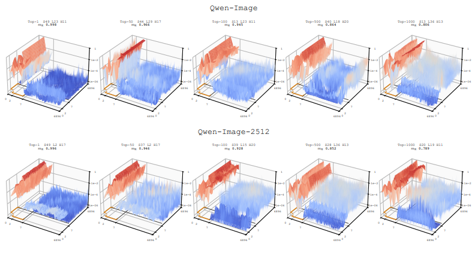
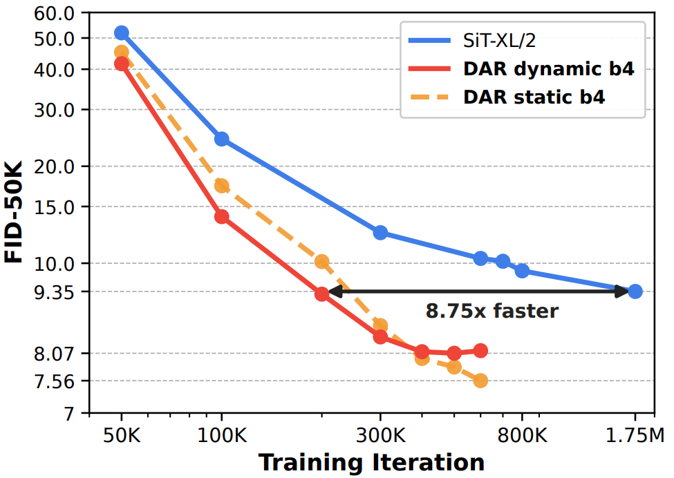
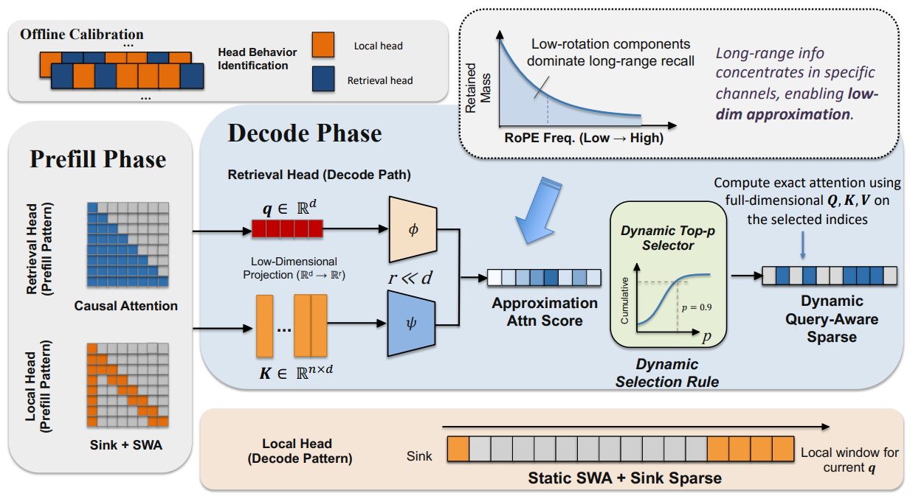
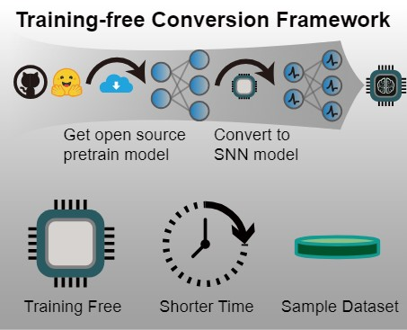
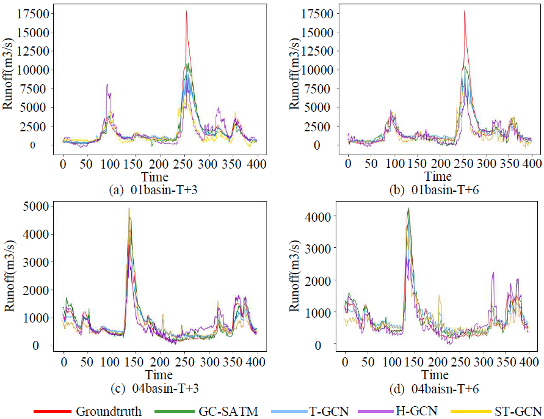

|
Maohua Li I'm a master student at Nanjing University in Suzhou, China. I'm fortunately supervised by Prof. Shao-Qun Zhang at LAMDA. Before that, I obtained my bachelor's degree from Hohai University. |
ExperienceAlibaba Group Holding2025.12 - NowPlatform Technology, RTP
Research intern concentrating on visual generation. Peking University2024.01 - 2025.05School of Computer Science
Research intern concentrating on spiking neural networks, supervised by Prof. Zhaofei Yu. 4Paradigm2024.10 - 2025.04Department of Science and Technology
AI engineering intern. Ranked 1/400+ among all full-time employees and interns in Dec. 2024 and Jan. 2025. |
Acacemic ServicesReviewerNeurIPS 2025, IEEE SMC 2023, Neurocomputing |
ProjectsWuli Qwen-Image TurboThe State-of-the-Arts distillation of Qwen-Image, delivering top-tier image quality with highly efficient inference. Featured on the Hugging Face homepage. [Open-source weights: 2-step, 4-step] [Blog (量子位)] Core Member |
Research |

|
 |
Text Template Tokens Are Implicit Semantic Registers in Diffusion
Transformers
Maohua Li, Qirui Li, Yanke Zhou, Yiduo Li, Zhaosheng Chi, Chao Xu, Cuifeng Shen, Yixuan Xu, Hanlin Tang, Kan Liu, Tao Lan, Lin Qu, Shao-Qun Zhang arXiv 🤗 #3 Paper of the day |
|
 |
Rethinking Cross-Layer Information Routing in Diffusion Transformers
Chao Xu*, Maohua Li*, Qirui Li, Yixuan Xu, Yanke Zhou, Yunhe Li, Cuifeng Shen, Hanlin Tang, Kan Liu, Tao Lan, Lin Qu, Shao-Qun Zhang arXiv 🤗 #2 Paper of the day Blog (阿里技术) |
|
 |
Full Attention Strikes Back: Transferring Full Attention into Sparse within
Hundred Training Steps
Yanke Zhou, Yiduo Li, Hanlin Tang, Maohua Li, Kan Liu, Lan Tao, Lin Qu, Yuan Yao, Xiaoxing Ma arXiv |
|
 |
Inference-Scale Complexity in ANN-SNN Conversion for High-Performance and
Low-Power Applications
Tong Bu*, Maohua Li*, Zhaofei Yu 2025 Proceedings of the Computer Vision and Pattern Recognition Conference (CVPR) |
|
 |
GC-SALM: Multi-Task Runoff Prediction Using Spatial-Temporal Attention
Graph Convolution Networks
Jin Lu, Zaipeng Xie, Jiayu Chen, Maohua Li, Chenghong Xu, Hongli Cao 2023 IEEE International Conference on Systems, Man, and Cybernetics (SMC) |
|
This website is forked from jonbarron's web. |

{kind=link}